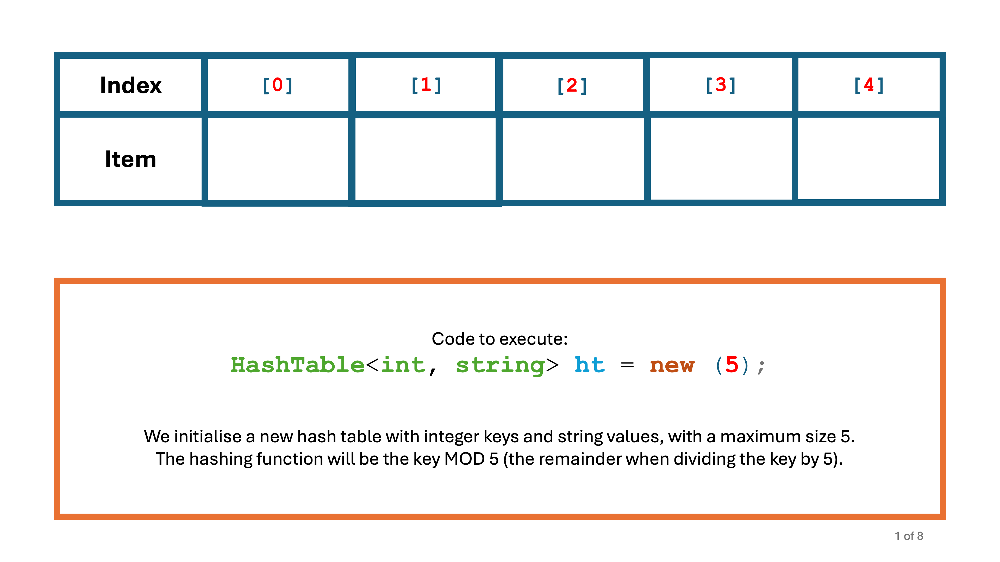
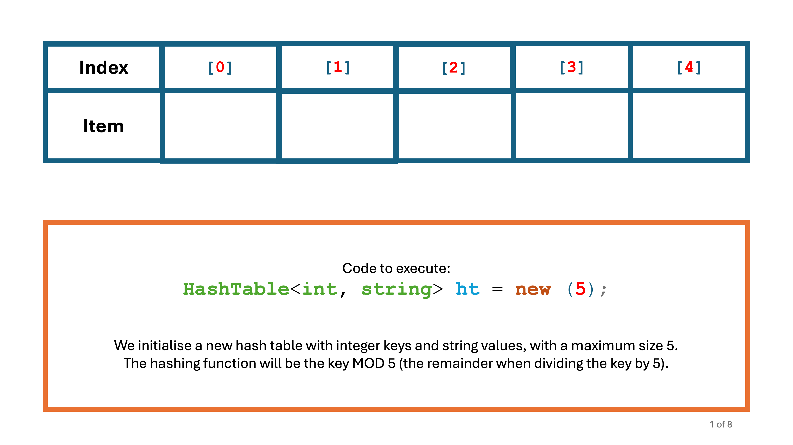

GCSE Link: None
 A hash table is a static data structure which provides a way of implementing a dictionary to make operations more efficient.
A hash table is a static data structure which provides a way of implementing a dictionary to make operations more efficient.
Hash tables use a hashing algorithm (a function which takes a key and returns an integer) to
decide where each key-value pair should be placed in the array. This allows us to get O(1)
(constant) time complexities for the Add and Get
methods.
For example, let's take a hash table of size 5 and hash function of key % 5.
If we want to add a pair with key 415278, it would go in index 3
(because 415278 % 5 is 3).
Diagram 1 shows how items can be added and retrieved from a hash table.
 Diagram 1
Diagram 1
 


Now imagine that we wanted to add a pair with key 747068 into our hash table.
This would cause a collision, as there is already an entry at index 3. We can solve this problem
using one of two methods:
Add and Get methods up to
O(n) (where n is the size of the hash table) in the worst case.
O(n/k) (where n is the total number of items in the hash table, and
k is the size of the array) on average.
 Why is it necessary to store both the key and value in the hash table, instead of just the value?
Why is it necessary to store both the key and value in the hash table, instead of just the value?
Multiple keys can have the same hash value, so their values would be stored at the same index. Without the key, the table couldn't distinguish between two keys that have the same hash value, making it impossible to verify a lookup.